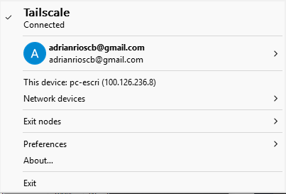
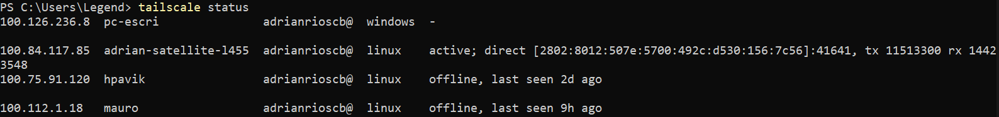

Tailscale: VPN para administrar el laboratorio¶
1. ¿Qué es Tailscale?¶
Tailscale es una herramienta que permite conectar computadoras y servidores mediante una red privada virtual (VPN). Utiliza WireGuard para establecer conexiones cifradas entre los dispositivos autorizados.
A diferencia de una VPN tradicional, no es necesario configurar manualmente todos los túneles ni abrir puertos en el router para cada equipo.
Cada dispositivo conectado recibe una dirección IP de Tailscale, generalmente dentro del rango 100.64.0.0/10, que permite comunicarse con otros dispositivos de la misma red privada.
2. ¿Para qué sirve?¶
Tailscale permite:
- Acceder remotamente a servidores Linux.
- Administrar equipos mediante SSH.
- Monitorear dispositivos con Zabbix desde otra red.
- Conectar equipos ubicados en diferentes redes físicas.
- Evitar exponer directamente servicios internos a Internet.
- Facilitar el acceso seguro a un laboratorio de redes y ciberseguridad.
3. ¿Cómo funciona?¶
El funcionamiento básico es el siguiente:
- Se instala Tailscale en cada dispositivo que necesite participar en la red.
- Los dispositivos se autentican y se incorporan a la misma red privada, denominada tailnet.
- Tailscale asigna una dirección IP a cada dispositivo.
- Los equipos autorizados pueden comunicarse mediante esas direcciones IP.
- El tráfico entre dispositivos se cifra mediante WireGuard.
Tailscale intenta establecer conexiones directas entre los dispositivos. Cuando las condiciones de red lo impiden, puede utilizar servidores de retransmisión.
4. Aplicación en el laboratorio de Zabbix¶
En este laboratorio, Tailscale permite que el administrador acceda al servidor Zabbix desde otra red sin publicar directamente su interfaz web en Internet.
La arquitectura propuesta es:
- Ubuntu: ejecutar Zabbix Server y la base de datos.
- Windows 11: funciona como equipo monitoreado mediante Zabbix Agent.
- Kali Linux: se utiliza para administrar el servidor y realizar pruebas de conectividad.
- Tailscale: proporciona la conectividad privada entre los equipos autorizados.
El agente de Zabbix puede comunicarse con el servidor a través de la IP de Tailscale. De esta manera, el monitoreo no depende de que ambos equipos estén conectados al mismo router.
Importante: los dispositivos deben estar autorizados en la misma tailnet y las reglas del firewall deben permitir los puertos necesarios. Tailscale no reemplaza la autenticación de Zabbix ni la configuración segura de los servicios.
5. Instalación y conexión¶
5.1. Ubuntu Server y Kali Linux¶
En distribuciones compatibles basadas en Debian, se puede utilizar el siguiente método de instalación oficial:
curl -fsSL https://tailscale.com/install.sh | sh
Una vez instalado, iniciar la conexión:
sudo tailscale up
El comando puede mostrar un enlace para autenticar el dispositivo desde el navegador.
5.2. Windows 11¶
- Descargar Tailscale desde el sitio oficial: https://tailscale.com/download
- Instalar la aplicación.
- Iniciar sesión con la cuenta que utiliza el laboratorio.
- Verificar que el dispositivo aparezca conectado.

También es posible utilizar los comandos de Tailscale desde PowerShell, si el ejecutable está disponible en el sistema.
6. Comandos útiles¶
6.1. Consultar el estado de la conexión¶
En Linux:
tailscale status

Muestra los dispositivos conocidos de la red y su estado de conexión.
6.2. Consultar la dirección IP¶
tailscale ip -4
Muestra la dirección IPv4 asignada por Tailscale al equipo local.
6.3. Conectar un dispositivo¶
sudo tailscale up
Inicia la conexión y solicita autenticación si es necesaria.
6.4. Desconectar un dispositivo¶
sudo tailscale down
Desconecta temporalmente el equipo de la red Tailscale. No elimina la instalación ni el dispositivo de la cuenta.
6.5. Comprobar la conectividad con otro equipo¶
tailscale ping IP_TAILSCALE
Ejemplo:
tailscale ping 100.84.117.85
El comando permite comprobar si se puede alcanzar otro dispositivo a través de Tailscale.
6.6. Conectarse al servidor mediante SSH¶
Desde Kali Linux o Windows 11, si el cliente SSH está instalado:
ssh usuario@IP_TAILSCALE
Ejemplo ilustrativo:
ssh ubuntu@100.69.187.108
Se debe reemplazar el usuario por el que exista en el servidor. La autenticación dependerá de la configuración de SSH, por ejemplo, mediante claves públicas.
6.7. Verificar el puerto del servidor Zabbix¶
Desde PowerShell en Windows:
Test-NetConnection IP_TAILSCALE -Port 10051
Este comando permite comprobar la conectividad TCP con el puerto 10051, utilizado por Zabbix Server para las comunicaciones con agentes y otros componentes.
Para verificar la interfaz web, se puede abrir la dirección correspondiente del servidor en el navegador, utilizando HTTP o HTTPS según la configuración implementada.
7. Seguridad y buenas prácticas¶
- Utilizar una cuenta protegida con autenticación multifactor.
- Autorizar únicamente los dispositivos necesarios.
- Revisar las reglas de acceso de Tailscale.
- Mantener actualizado Tailscale en todos los equipos.
- No publicar innecesariamente los puertos de SSH o Zabbix en Internet.
- Mantener configurados los firewalls de cada sistema.
- Utilizar claves SSH y credenciales seguras.
- No confundir conectividad VPN con autorización para acceder a todos los servicios.